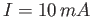
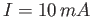
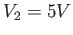
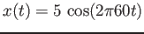

Instructions
In the circuit below,  , , , , and .
Find , , , , and with their polarity or direction
as labeled.
, , , , and .
Find , , , , and with their polarity or direction
as labeled.
Solution
, , , , and .
Find the Thevenin model (equivalent circuit) for each of the following 6 circuits, with the two open terminals on the right treated as the output port. In all circuits, , , , , , , (when applicable).
Match each of the 6 circuits, numbered from 1 to 6, to one of the following Thevenin models in terms of and :
Solution
Sketch an op-amp circuit that accepts input , , and and computes as the output.
If , sketch as a function of time from the following circuit. Assume that the ON voltage of the diode is 0.7V.